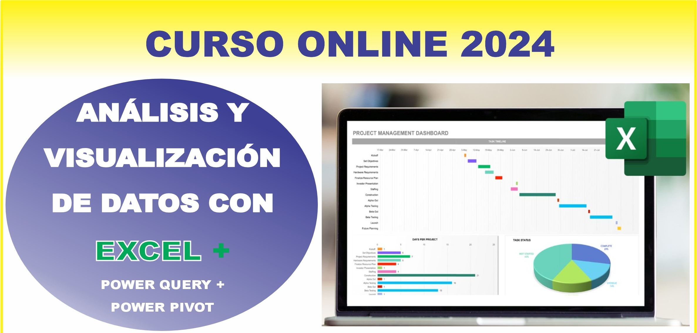
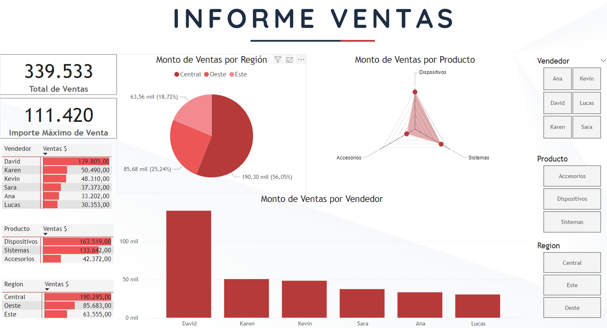
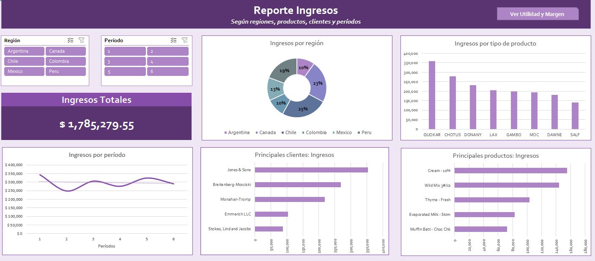

✅ INSCRIPCIÓN : https://forms.gle/rHj7KsVs2YqAy2zz6
✅ Costo Total: 300.000gs
Incluyen: Materiales + Grabaciones + Certificado
✅ Hora: 19 a 21.40hs.
✅ Inicio: Jueves 03 de octubre (4 sesiones)
"Descuento especial para grupos de 2 o más personas"
- 2 pers. 250mil c/u
- 3 pers. 200mil c/u
- 4 pers. o más 180mil c/u
✅ Formas de Pago:
Transf. bancaria:
Banco Itaú
Cuenta N° 720005407
Titular: Oscar González Frutos
CI: 3584172
Giros Tigo:
0983 352 932
✅ Enviar comprobante aquí.
✅ Escribir al WhatsApp: https://wa.me/595983352932
DOCENTE: Oscar González Frutos
Temas
Sesión 1: Introducción al Análisis de Datos en Excel
- Visión general de Excel como herramienta de análisis.
- Importancia del formato y la preparación de datos.
Power Query y Tablas Dinámicas
- Introducción a Power Query
- Qué es Power Query y cómo acceder a él.
- Importación de datos desde diversas fuentes.
- Primeros pasos en la limpieza de datos:
- Eliminación de duplicados.
- Filtrado básico de datos.
- Cambiar tipos de datos y corregir errores.
- Introducción a Tablas Dinámicas
- Qué son las Tablas Dinámicas y cuándo usarlas.
- Creación de una Tabla Dinámica básica.
- Exploración de datos con Tablas Dinámicas.
- Ejercicio Práctico 1
- Los estudiantes importarán un conjunto de datos, aplicarán transformaciones básicas en Power Query y crearán una Tabla Dinámica para analizar los datos.
Sesión 2: Power Pivot
- Introducción a Power Pivot
- Qué es Power Pivot y cómo se diferencia de las tablas regulares.
- Habilitar Power Pivot y crear un modelo de datos.
- Creación de relaciones entre tablas y la importancia de las claves primarias y foráneas.
- Uso de Tablas Dinámicas con Power Pivot
- Creación de Tablas Dinámicas desde un modelo de datos en Power Pivot.
- Exploración de relaciones y jerarquías en Tablas Dinámicas.
- Personalización de Tablas Dinámicas para informes avanzados.
- Ejercicio Práctico 2
- Los estudiantes trabajarán con un conjunto de datos más complejo, aplicarán transformaciones avanzadas en Power Query, crearán un modelo de datos en Power Pivot, y explorarán los datos mediante Tablas Dinámicas.
Sesión 3: DAX
- Medidas y KPI con DAX en Power Pivot
- Introducción a DAX (Data Analysis Expressions).
- Creación de medidas básicas: SUM, COUNT, AVERAGE.
- Desarrollo de KPI’s personalizados.
- Análisis Avanzado con DAX
- Funciones de tiempo: Year-to-Date, Month-to-Date.
- Cálculos condicionados: IF, SWITCH.
- Medidas dinámicas con DAX.
- Creación de Informes con Power Pivot y Tablas Dinámicas
- Desarrollo de informes detallados utilizando Power Pivot.
- Creación de Tablas Dinámicas avanzadas para informes detallados.
- Personalización de informes y gráficos.
- Ejercicio Práctico 3
- Los estudiantes crearán medidas DAX, desarrollarán un informe básico en Power Pivot, y utilizarán Tablas Dinámicas para presentar los datos.
Sesión 4: Visualización y Presentación de Informes
- Introducción a la Visualización de Datos en Excel
- Selección de gráficos adecuados según el tipo de datos.
- Utilización de gráficos predeterminados en Excel.
- Creación de dashboards básicos:
- Diseño de un dashboard desde cero.
- Vinculación de gráficos con Tablas Dinámicas.
- Uso de segmentadores y gráficos interactivos.
- Automatización y Actualización de Informes
- Cómo actualizar automáticamente los datos en los informes.
- Automatización de procesos repetitivos.
- Ejercicio Práctico 4
- Los estudiantes crearán un dashboard utilizando Tablas Dinámicas y gráficos interactivos, y lo prepararán para actualización automática.
Materiales Adicionales
- Plantillas y archivos de Excel para cada sesión.
- Lecturas y videos recomendados para seguir practicando después de cada sesión.
- Ejercicios de práctica opcionales para profundizar en los temas.
Ejemplos:


Metodología de Enseñanza
✅ 100% online en vivo, interactuando docente y alumnos:
- Tutorías personalizadas para resolver dudas y guiar el aprendizaje.
- Opción para que los alumnos trabajen con sus propias bases de datos.
- Clases grabadas disponibles para repasar el contenido.
- Materiales de apoyo descargables para seguir el curso.
- Ejercicios prácticos para aplicar los conceptos aprendidos.
- Sesiones de preguntas y respuestas para aclarar conceptos en tiempo real.
- Sesiones de retroalimentación.